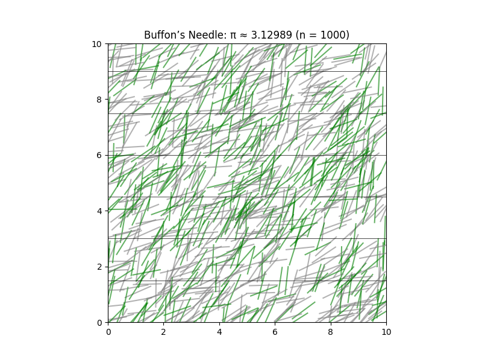

Problem 2: Estimating π Using Monte Carlo Methods
Motivation
Monte Carlo simulations use randomness to estimate values and solve complex problems. Estimating π is one of the most intuitive examples, showing how probability, geometry, and computational techniques can come together. We'll explore two methods:
- Estimating π using random points in a square and circle.
- Estimating π using Buffon’s Needle experiment.
Part 1: Estimating π Using a Circle
1. Theoretical Foundation
We generate random points in a square bounding a unit circle. The ratio of the number of points that fall inside the circle to the total number of points approximates:
\[
\frac{\text{Points inside circle}}{\text{Total points}} \approx \frac{\pi}{4}
\]
Hence,
\[
\pi \approx 4 \times \frac{\text{Points inside circle}}{\text{Total points}}
\]
2. Simulation Code
import numpy as np
import matplotlib.pyplot as plt
def estimate_pi_circle(n_points):
x = np.random.uniform(-1, 1, n_points)
y = np.random.uniform(-1, 1, n_points)
inside_circle = x**2 + y**2 <= 1
pi_estimate = 4 * np.sum(inside_circle) / n_points
# Visualization
plt.figure(figsize=(6, 6))
plt.scatter(x[inside_circle], y[inside_circle], color='blue', s=1, label='Inside Circle')
plt.scatter(x[~inside_circle], y[~inside_circle], color='red', s=1, label='Outside Circle')
circle = plt.Circle((0, 0), 1, color='black', fill=False)
plt.gca().add_artist(circle)
plt.title(f"Circle Method: π ≈ {pi_estimate:.5f} (n = {n_points})")
plt.axis('equal')
plt.legend()
plt.show()
return pi_estimate
# Example usage:
estimate_pi_circle(10000)
3. Visualization
- Blue dots represent points inside the circle.
- Red dots are outside the circle.
- As the number of points increases, the estimate converges to π.
4. Analysis
- Larger sample sizes yield more accurate estimates.
- Fast convergence with increasing number of points.
- Very intuitive and efficient for parallel computation.
Part 2: Estimating π Using Buffon’s Needle
1. Theoretical Foundation
Buffon’s Needle experiment drops a needle on a surface with equally spaced parallel lines. The probability \( P \) that a needle crosses a line is given by:
\[
P = \frac{2l}{\pi d}
\]
Rearranging the formula to solve for π:
\[
\pi \approx \frac{2l \cdot N}{d \cdot H}
\]
Where:
- \( l \) = length of the needle
- \( d \) = distance between the lines
- \( N \) = total number of needle drops
- \( H \) = number of times the needle crosses a line
2. Simulation Code
import numpy as np
import matplotlib.pyplot as plt
def estimate_pi_buffon(n_drops, needle_length=1.0, line_spacing=1.5):
hits = 0
x_centers = []
angles = []
crosses = []
for _ in range(n_drops):
x_center = np.random.uniform(0, line_spacing / 2)
theta = np.random.uniform(0, np.pi / 2)
if (needle_length / 2) * np.sin(theta) >= x_center:
hits += 1
crosses.append(True)
else:
crosses.append(False)
x_centers.append(x_center)
angles.append(theta)
if hits == 0:
return None # Avoid division by zero
pi_estimate = (2 * needle_length * n_drops) / (hits * line_spacing)
# Visualization
plt.figure(figsize=(8, 6))
for i in range(n_drops):
x = np.random.uniform(0, 10)
y = np.random.uniform(0, 10)
angle = angles[i]
dx = (needle_length / 2) * np.cos(angle)
dy = (needle_length / 2) * np.sin(angle)
x1, x2 = x - dx, x + dx
y1, y2 = y - dy, y + dy
color = 'green' if crosses[i] else 'gray'
plt.plot([x1, x2], [y1, y2], color=color, alpha=0.6)
for i in range(11):
plt.axhline(i * line_spacing, color='black', linewidth=0.5)
plt.title(f"Buffon’s Needle: π ≈ {pi_estimate:.5f} (n = {n_drops})")
plt.xlim(0, 10)
plt.ylim(0, 10)
plt.gca().set_aspect('equal')
plt.show()
return pi_estimate
# Example usage:
estimate_pi_buffon(1000)

3. Visualization
- Each needle is drawn over horizontal lines.
- Green: crosses a line
- Gray: does not cross
- More drops lead to better approximation.
4. Analysis
- Estimates π probabilistically using trigonometry.
- Convergence is slower than the circle method.
- More complex logic and geometry, but historically significant.
Final Analysis and Comparison
| Method | Code Complexity | Convergence Speed | Accuracy | Visual Appeal |
|---|---|---|---|---|
| Circle Method | Simple | Fast | High | High |
| Buffon’s Needle | Medium | Slower | Medium | Medium |
- The circle method is recommended for fast, accurate results.
- Buffon’s needle is a beautiful illustration of how geometry and probability can reveal deep mathematical truths.
Summary
- Both methods estimate π using randomness.
- The circle-based method is more efficient and easier to implement.
- Buffon’s needle connects to classical probability and is valuable for educational purposes.